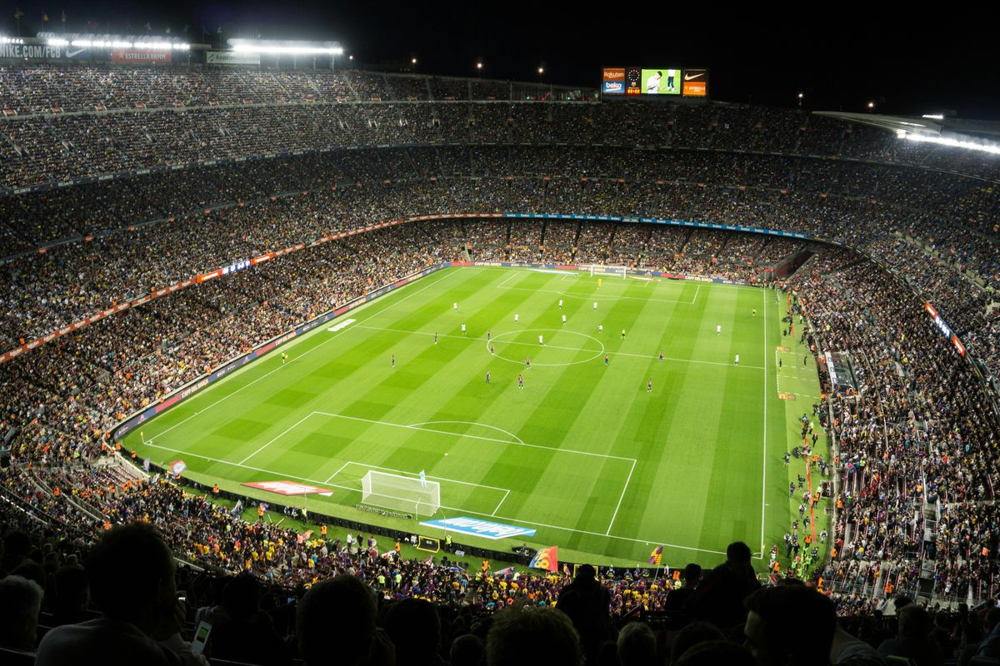

Selamat datang di mini-situs hobi saya © 2026. Sepak bola merupakan olahraga tim yang membutuhkan kerja sama, strategi, dan fisik yang prima untuk mencapai kemenangan bersama.
Dalam permainan sepak bola, stamina pemain membutuhkan pasokan cairan H2O yang cukup, serta perhitungan ruang gerak lapangan berukuran $100 × 64$ m2 ™.
